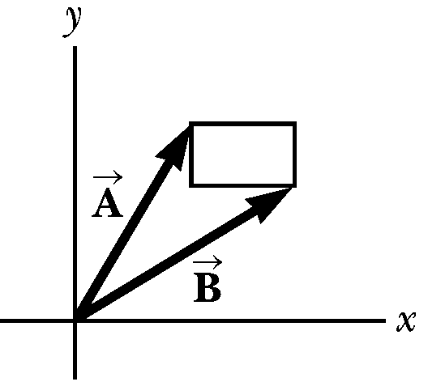

Homework 2 - Motion In 2D
Problem 2.1
The helicopter view of the figure below shows two people pulling on a stubborn mule. Find:
- the single force that is equivalent to the two forces shown. (\(|\vec{F_2}|=80.0~N\) and \(|\vec{F_1}|=120~N\))
- the force a third person would have to exert on the mule to make the net force equal to zero. The forces are measured in units of Newtons (\(N\)).

Problem 2.2
The rectangle shown in the below figure has sides parallel to the x and y axes. The position vectors of two corners are \(\vec{A} = 10.0~m\) at \(50.0^\circ\) and \(\vec{B} = 12.0~m\) at \(30.0^\circ\).
- Find the perimeter of the rectangle.
- Find the magnitude and direction of the vector from the origin to the upper-right corner of the rectangle.

Problem 2.3
A soccer player kicks a rock horizontally off a \(40.0~m\) high cliff into a pool of water. If the player hears the sound of the splash \(3.00~s\) later, what was the initial speed given to the rock? Assume the speed of sound in air is \(343~m/s\).
Problem 2.4
To start an avalanche on a mountain slope, an artillery shell is fired with an initial velocity of \(300~m/s\) at \(55.0^\circ\) above the horizontal. It explodes on the mountainside \(42.0~s\) after firing. What are the x and y coordinates of the shell where it explodes, relative to its firing point?
Problem 2.5
- Can a particle moving with instantaneous speed \(3.00~m/s\) on a path with radius of curvature \(2.00~m\) have an acceleration of magnitude \(6.00~m/s^2\) ?
- Can it have an acceleration of magnitude \(4.00~m/s^2\)? In each case, if the answer is yes, explain how it can happen; if the answer is no, explain why not.
Problem 2.6
An athlete swings a ball, connected to the end of a chain, in a horizontal circle. The athlete is able to rotate the ball at the rate of \(8.00~rev/s\) when the length of the chain is \(0.600~m\). When he increases the length to \(0.900~m\), he is able to rotate the ball only \(6.00~rev/s\).
- Which rate of rotation gives the greater speed for the ball?
- What is the centripetal acceleration of the ball at \(8.00~rev/s\)?
- What is the centripetal acceleration at \(6.00~rev/s\)?